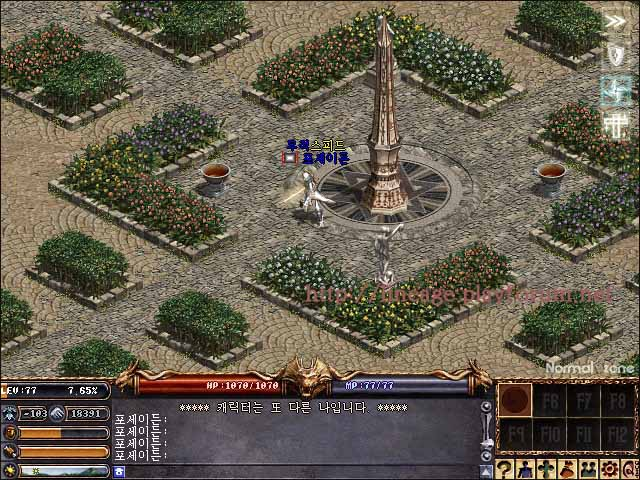

| 2003年12月19日
韓國正式及測試伺服器12月17日更新內容
來源：韓國天堂官方網站公告
英文翻譯：Lineage
Center
以下兩項內容在韓國的正式及測試伺服器上同時更新：
1. 當NPC伺服器關閉時，寵物身上的道具會掉在主人身上，但假如主人的位置在寵物的一個畫面之外，道具則會掉在地上。
2. 玩家可以刪除有數量的道具，在刪除時一樣會有確認提示。
美國正式伺服器12月16日更新內容
來源：美國天堂官方網站公告
1. 加入了現有道具的新物件圖檔。
2. 加入了部分下一章節會用到的檔案。
3. 加入了新的變身選項：
50級 - 巨人牛人
51級 - 火陷弓箭手 及 黑騎士隊長
4. 加入了炎魔的變身選項，等級限制暫時設為1級
5. 改善了很多怪物的人工智能及尋找路徑的方式，以防止玩家利用怪物的AI缺憾來定怪。
Poseidon 77級了！
來源：Lineage
Playforum
英文翻譯：Lineage
Center
經過了漫長的歳月，Poseidon在2003年12月12日終於升上77級了！
 |